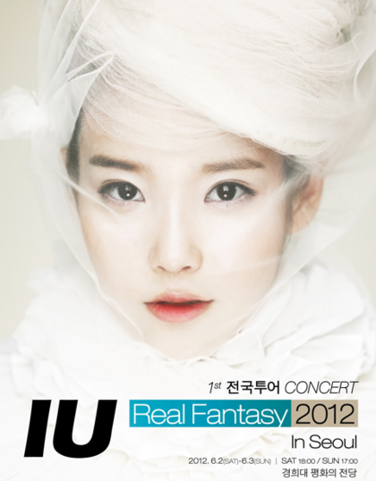

Real Fantasy

서울 |
경희대학교 평화의 전당
2012년 6월 2,3일
울산 |
울산 KBS홀
2012년 6월 9,10일
전주 |
전북대학교 삼성문화회관
2012년 6월 16일
수원 |
경기도 문화의전당 행복한대극장
2012년 6월 30일
부산 |
부산 KBS홀
2012년 7월 7,8일
대구 |
영남대학교 천마아트센터 그랜드홀
2012년 7월 14,15일
서울 |
전쟁기념관 평화의 전당
2012년 9월 22,23일